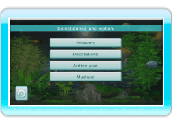
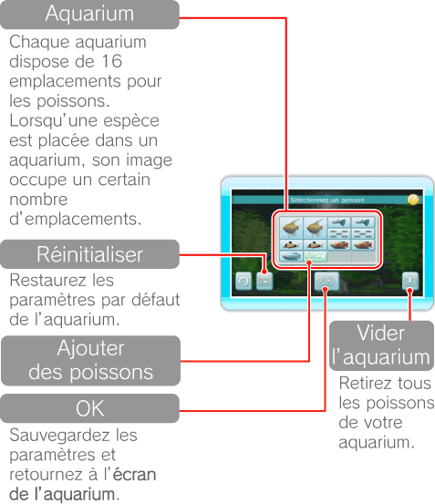
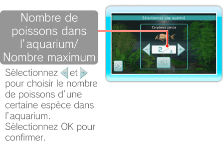
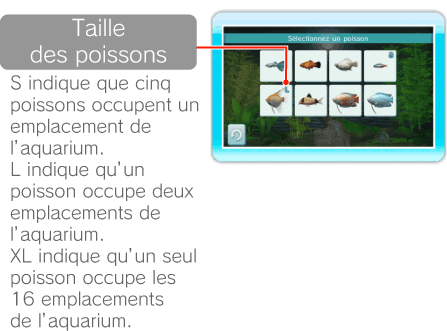
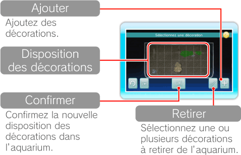
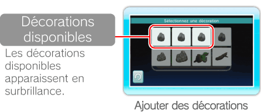
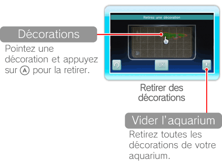

15 |
Paramètres de l’aquarium |
 |
|

Pointez à l’écran de l’aquarium et appuyez sur
Vous pouvez changer le type et le nombre de poissons dans votre aquarium. La quantité de poissons que vous pouvez y mettre est cependant limitée et dépend de leur taille. Lorsque vous avez terminé, sélectionnez OK pour confirmer. 
Pointez un emplacement contenant déjà une espèce et appuyez sur  Pointez et appuyez sur 
Dans votre aquarium, vous pouvez déplacer ou modifier les décorations telles que le bois flotté ou les rochers. Lorsque vous avez terminé, sélectionnez OK pour confirmer. Les plantes sont disposées automatiquement. 
Pointez une décoration et appuyez sur  pour la saisir. Pointez ensuite l’endroit de destination et appuyez sur pour la placer. Vous pouvez également la faire pivoter en appuyant sur pour la saisir. Pointez ensuite l’endroit de destination et appuyez sur pour la placer. Vous pouvez également la faire pivoter en appuyant sur Note: lorsqu’une décoration apparaît en rouge, elle ne peut pas être placée à l’endroit voulu.
Sélectionnez pour ajouter des décorations, ou   |
 |
 |
 |